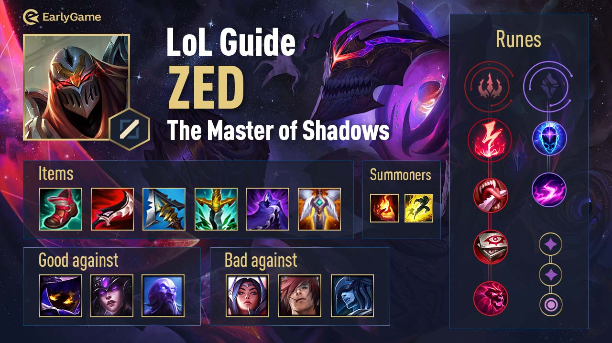

League of Legends,communément appelé LoL est un jeu de type MOBA
le jeu consiste à être le premier à détruire les tourelles ennemies , afin d'accéder aux inhibiteurs qui protégent le Nexus,l'équipe détruisant le Nexus gagne.
Une équipe est composé de 5 joueurs,chacun ayant un rôle attribué avant le début de la partie,Il y a les Junglers qui sont à part,qui vont essayer d'aider les autres équipiers,il y'a les Laners:
La Toplane,Midlane,Botlane et le Support, les deux derniers vont ensemble et sont 2 sur la même Lane
Voici une image qui montre les différentes voies(lanes)
Les personnages de type Mage,à savoir Xerath,Ahri,Azir,Veigar etc...sont viables sur la Midlane,les personnages de type Fighter,ou Assassins
Voici des vidéos pour débutants avec des personnages Midlane, Zed, Ahri
Des personnages ayant du contrôle de foule(CC,Root,Snare)sont souvent les Supports, qui ont pour but d'assister leur Botlane(ADC), en gênant l'ennemi,l'autre type de support majoritaire sont les support peel,qui vont soigner ,booster leurs alliés.
Voici des vidéos pour débutants avec des personnages Support, Leona, Lux
Les personnages qui ont plus de portée, ADc sont sur la même voie que les supports,ils ont pas beaucoup de mobilité mais font d'énormes dégâts.
Voici des vidéos pour débutants avec des personnages ADc, Miss Fortune, Tristana
La voie du haut(Toplane) est particulière car plein de personnages peuvent y jouer, des Tank,des Fighter,des Supports etc...
Voici des vidéos pour débutants avec des personnages Toplane, Mordekaiser, Garen
Il faut savoir varier les personnages qu'on joue car, au fur et à mesure du temps,les personnages sont soit Buff(rendus meilleurs), soit Nerf(rendus pires),les joueurs pros ,dans l'E-Sport savent jouer la plupart des champions avec un niveau très bon
Voici un exemple de "Patchnote" où l'ont peut lire les différents ajustements apportés aux champions Patchnote 13.4
L'autre partie importante de LoL sont les items,ce sont des objets qui peuvent être achetés pour de l'argent,argent obtenu en tuant les sbires ennemis(ce sont des mobs,ia).Les items donnent des stats ,qui permettent aux champions d'être plus forts,dans une situation où 1 champion a 3 items et se bats contre quelqu'un qui en a 1, celui avec 3 devrait gagner facielement 
Page Suivante →